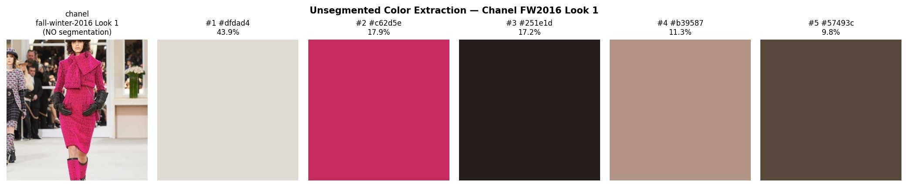
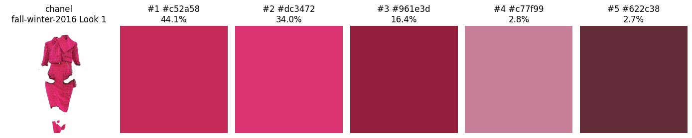
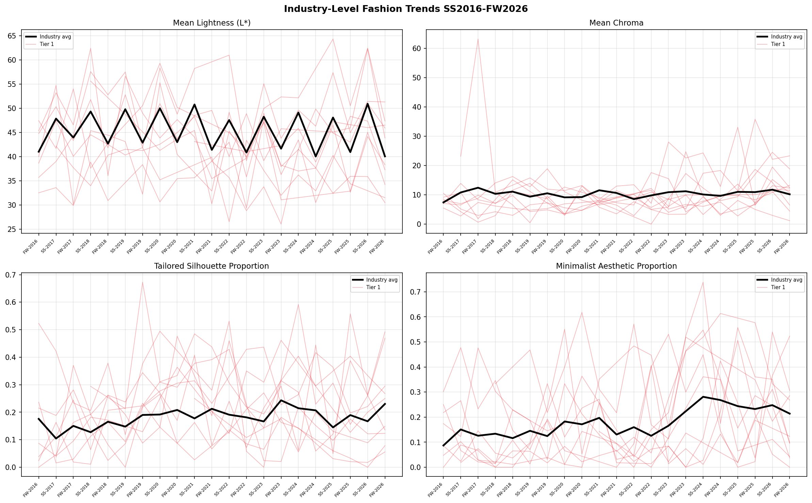

A computational pipeline that extracts visual attributes from a decade of luxury runway imagery and tests three foundational theories of how trends actually spread.
The fashion industry projects $957 billion in revenue in 2026, and most of its biggest decisions are still made qualitatively. A small group of experts at firms like WGSN and Pantone watches runways, street style, social media, and cultural movements, then synthesizes what is rising. The expertise is real — but it is expensive, slow to validate, and operating against a media environment that now produces millions of stylistic signals per day.
My thesis asks whether the same task can be approached computationally and at scale: can a machine learning pipeline extract the same kind of structured signal from runway photography — color palettes, silhouettes, aesthetic categories — and use those signals to forecast future seasons? And critically: do the resulting forecasts behave the way three foundational diffusion theories say fashion trends should behave?
The full pipeline runs on Google Colab and is fully reproducible.
Scraped Tagwalk for 48,534 runway looks across 50 brands and 22 seasons using BeautifulSoup, rate-limiting, and retry logic.
Applied SegFormer-B2 garment segmentation to isolate clothing from background, lighting, and model bias.
Weighted k-means in CIELAB color space (k=5) for palette; zero-shot CLIP across 53 labels for silhouette, aesthetic, and design attributes.
Four models benchmarked on a 16-train / 6-test seasonal split, with Granger causality and STL decomposition for diffusion analysis.
One early finding shaped the rest of the pipeline. When color clustering is applied directly to a raw runway image, the largest cluster is almost always the runway floor, the stage lighting, or the model's skin tone — not the garment. The signal that matters is buried under noise.
Segmenting the garment first — using SegFormer-B2 to isolate the look from everything around it — is what makes the color signal real. The same Chanel FW2016 look, processed both ways, makes this concrete:

Largest cluster: light beige (43.9%). The runway floor and audience dominate the palette — the iconic Chanel pink reads as the second cluster at just 17.9%.

Largest cluster: Chanel pink (44.1%). The five-cluster palette now reads as a coherent pink family across raspberry, rose, and burgundy — the actual color story of the look.
Segmentation is not a preprocessing detail. It is the single decision that determines whether the rest of the pipeline measures fashion or measures lighting.
Fashion attributes have different statistical properties: silhouette and aesthetic proportions are bounded between 0 and 1, while CIELAB color coordinates are continuous and can drift. I benchmarked classical statistical models against deep learning to see which class of model handles which kind of signal.
Model performance depends on attribute type, not model complexity. Classical models win on proportions (ARIMA mean MAE = 0.09); deep learning wins on continuous color (Attention-LSTM mean MAE = 0.79).
Aggregated across all 50 designers, the pipeline surfaces structural shifts in the industry — not just brand-level noise. Quiet luxury and minimalist aesthetics rose from roughly 12% to 27% over the study period, and tailored silhouettes show clear upward trajectory across the decade. These findings were simultaneously observed by industry analysts during the same period, externally validating the computational approach.

Industry-level signal vs. individual-brand variance, FW2016 — FW2026
Three foundational theories explain how fashion trends spread. I tested all three quantitatively at this scale — using Granger causality, cross-tier correlations, and STL decomposition — on the pipeline's extracted attributes.
Do trends start in elite Tier 1 houses (French maisons) and trickle down to lower tiers? Tested with Granger causality across 128 brand-attribute-lag combinations.
Do trends spread simultaneously across tiers, driven by media exposure rather than social hierarchy? Tested with cross-tier Pearson correlations at zero lag.
Do trends move in recurring cycles — bright in Spring/Summer, dark in Fall/Winter, with longer aesthetic pendulum swings? Tested with STL decomposition and spectral analysis.
The clearest theoretical finding: aesthetics trickle down vertically while silhouettes trickle across horizontally — at the same time. Fashion does not have a single diffusion mechanism. It has at least two, operating in parallel on different visual attributes.
The full dataset is available as an interactive visualization. Filter by brand, tier, season, and attribute — and compare predicted versus observed palettes for the test seasons.
If your team works on trend, planning, analytics, or computer vision in fashion, I would love to hear from you.
Get in touch →